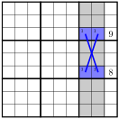
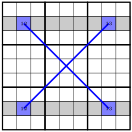

Section 3.4 X-Wings
Learning Objectives
When solving Sudokus, there are certain patterns of logic that seem to come up repeatedly. As puzzle solvers started to recognize those patterns, they began to give them names. The value of the name is that it becomes a type of shortcut for identifying situations in which that particular pattern arises, and it also allows the underlying logic to be condensed down into its most basic form.
One of the more basic patterns is known as an X-Wing. The reason for this name will become apparent as we work through the logic. X-Wings arise in situations where a digit’s positions have been restricted to just two possibilities inside of multiple boxes. More specifically, they arise when those positions are geometrically related to each other. Consider the following puzzle.
Let’s think about the possible positions for 1 in box 9. At first, it may seem as though there is not a lot of information available to work with in that box. In order to see the logic, we need to take a step back and think about the interaction between boxes 3 and 6. In box 3, we know that 1 must either be in column 7 or column 8. Similarly, box 6 tells us that 1 must also either be in column 7 or column 8. The repetition of those columns should seem important, even if you’re not quite sure why.
The trick is to follow the box and column logic an extra step. Suppose we knew for certain that the 1 in box 3 was in column 7. What would we be able to conclude about the 1 in box 6? Since it’s now impossible for the 1 in box 6 to be in column 7, we know it must be in column 8. And so we have placed the 1 in both of columns 7 and 8. This means that the 1 in box 9 must appear in column 9.
But what would happen if we knew for certain that the 1 in box 3 was in column 8, instead? In this situation, the 1 in box 6 would have to be in column 7, which places the 1 in both of columns 7 and 8 again. And so we again conclude that the 1 in box 9 must be in column 9.
What this means is that regardless of where the 1s appear in boxes 3 and 6, we must have that the 1 in box 9 is in column 9. It’s important to remember that we don’t actually know where the 1s in boxes 3 and 6 are located. We just know that it is in one of two possible configurations, and in both cases, it pushes the 1 in box 9 into column 9.
Let’s represent this logic visually. In the first situation, the 1s are in r3c7 and r6c8. We’ll draw a line connecting those two positions. In the second situation, the 1s are in r3c8 and r6c7, and we’ll draw the line connecting them. You will notice that the resulting diagram has a large X in it, and that is the reason this is called an X-Wing. (Also, the Sudoku community enjoys the Star Wars reference.) The shaded parts of the diagram below show positions that cannot be a 1 based on the X-Wing. (Notice that we also know that the 1 is restricted in row 3 and row 6, but that’s not due to the X-Wing logic. That’s due to the corner markings.)

X-Wings are not limited to adjacent columns. As long as the position of a digit is locked into the same two positions in two rows or columns, an X-Wing is created. Here is an example of an X-Wing on 1s that basically spans the entire puzzle. Using the same logic as before, we know that there cannot be any 1s in any of the shaded boxes. Notice that the pairs are related vertically, which makes the X-Wing logic horizontal.

Ambiguous/unsolvable situations